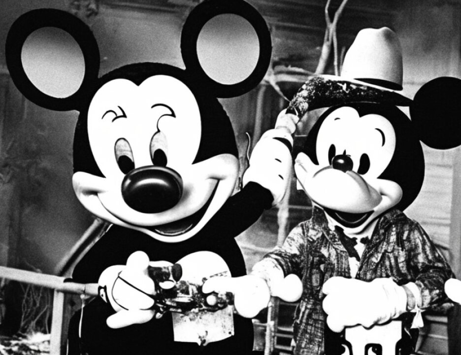

24 one -- you constantly kick yourself saying maybe I should have
25 done this, maybe I should have done more here, I should have
7093
1 done more here, and that bedevils you for years afterwards.
2 I can tell you I have had a lot of reservations. I
3 was up until early this morning wondering, because we were
4 pulling things we didn't want to use. We had many tapes we
5 pulled out because we want to cut to the issue. But at the
6 same time you have this fear that if I get enough in, they
7 will understand it, they will look at it; maybe if you put it
8 from one perspective, you be put it from another, they can get
9 it.
10 I would ask the Court for an 18-minute gap of leeway.
11 The BBC tape is not about this at all. There are some
12 different perspectives in this tape, I think you will agree,
13 than the other that we have seen on the situation.
14 I would also remind the Court --
15 THE COURT: I'm certainly not going to allow Halliday
16 and the Albright clip again. That's pure repetition.
17 MR. BAUGH: That is pure repetition and it just comes
18 with it and we don't have the capability to edit -- if we can
19 cut it out, fine. If you want me to cut it off, I'll have
20 somebody do it. Believe me, I'll find somebody to get it
21 done.
22 THE COURT: But apart from what's left from that is a
23 plea by bishops and other clergymen for the ending of the
24 embargo because killing innocent people is against God's law.
25 Now, would we permit that testimony live? Would we
7094
1 permit a theologian to testify concerning his opposition to
2 the Food For Oil Program and the embargo?
3 MR. BAUGH: Throughout the guilt phase of this case,
4 which of course the United States has adopted for the penalty
5 phase, words like "evil" and "heinous" have been used for the
6 acts committed in Nairobi. And they were. I will concede
7 that. However, I think it is imperative that the jury
8 understand that one thing that is different about this case is
9 that we have a defendant charged with a case who -- when I
10 used to work in the U.S. Attorney's Office, the rule of thumb
11 was there are three reasons for all crime: Passion, greed and
12 crazy. This motivation is none of the above.
13 Mr. Clark has talked about --
1